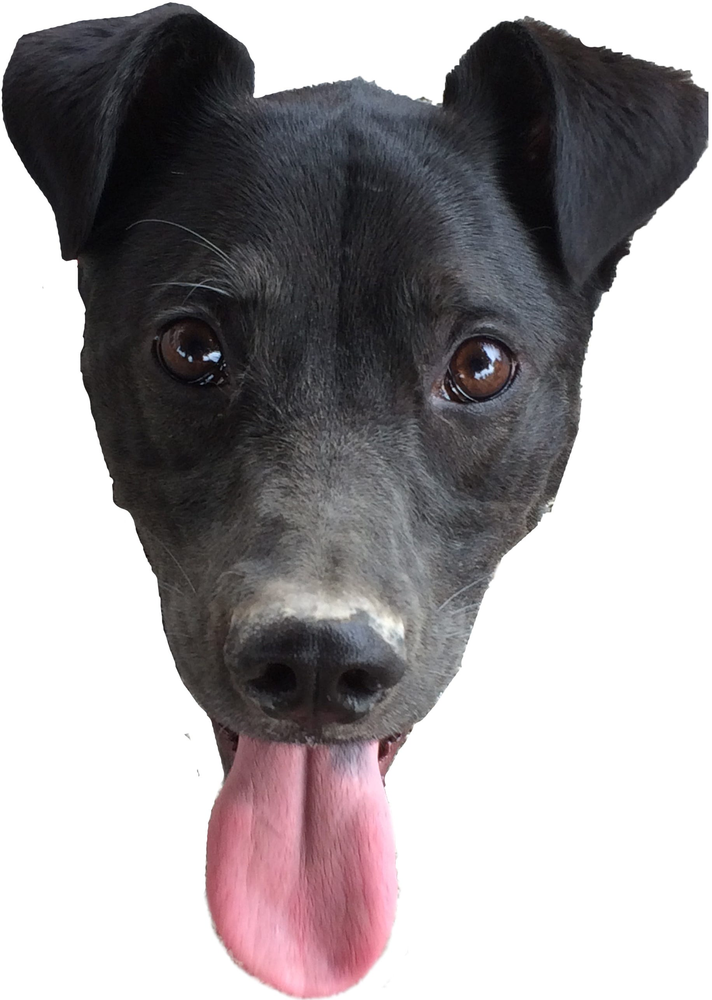

I Made Lego Art!
A few months ago, I stumbled across A Career Retrospective by Sailor Mercury. In this article, Sailor Mercury wrote about several unique and interesting projects she’s done, including automated knitting, working on the ASIMO robot and starting a computer science publication.
One of those projects really stuck out to me — a script she wrote with Matt Baker and Frank Lin that converted an image into Legos. I loved the idea so much I decided to build my own Lego art!
The Legoizer Script
First things first — I needed to write a script that turns an image into Legos. Sailor mercury published a tool that does exactly this, but coding it myself sounded more fun.
After a bit of thought, I landed on this approach:
-
Load the image. For the purposes of this script, I decided to take the simplest approach possible, ignoring performance.
-
Scale the image with distortion. According to Brickopedia, a 1×1 lego brick is 8mm wide by 9.6mm tall. By distorting the image, I can use a single pixel to represent one Lego brick.
-
Map each pixel in the image to its closest Lego color.
-
Convert the pixels back to an undistorted size and save the image.
Script Interface
I settled on this for my script’s interface:
ruby legoizer.rb <path-to-image> <blueprint-width>
-
path-to-image: The path of the image to load.
-
blueprint-width: The width of the final blueprint in 1×1 Lego bricks.
First, I parsed the arguments and validated them. If any one of the arguments was bad or missing, the script printed out its usage and exits.
def exit_with_error
puts "Usage: ruby legoizer.rb <path-to-image> <blueprint-width>"
exit 1
end
def is_int?(string)
true if Integer(string) rescue false
end
exit_with_error unless ARGV.length == 2
exit_with_error unless File.exist?(ARGV[0]) && File.file?(ARGV[0])
exit_with_error unless is_int? ARGV[1]
image_path = ARGV[0]
blueprint_width = ARGV[1].to_i
Reading in the Image
Next, I wrote a small class to read the image. I used MiniMagick, which is a wrapper for ImageMagick.
class Image
def initialize(minimagick_image)
@minimagick_image = minimagick_image
minimagick_image.format "png"
end
def self.read(path)
Image.send(:new, MiniMagick::Image.open(path))
end
def width
@minimagick_image.width
end
def height
@minimagick_image.height
end
private_class_method :new
end
Then, I added an Image.read call to my main script.
image = Image.read(image_path)
Resizing the Image
When resizing my image, I needed to distort it. To that end, I added a scale method to my Image class.
def scale(width, height)
@minimagick_image.scale "#{ width }x#{ height }!"
end
The ! tells ImageMagick to ignore the aspect ratio of the image.
Next, I needed to determine the height of the image in Lego bricks.
blueprint height = blueprint width × brick aspect ratio ÷ image aspect ratio
brick_apsect_ratio = 1.0 * LegoBlueprint::BRICK_PIXEL_WIDTH
/ LegoBlueprint::BRICK_PIXEL_HEIGHT
image_aspect_ratio = 1.0 * image.width / image.height
blueprint_height = (1.0 * blueprint_width * brick_apsect_ratio
/ image_aspect_ratio).round
Finally, I called scale from my main script.
image.scale(blueprint_width, blueprint_height)
Lego Colors
Brickset publishes a list of all of the available Lego colors and their hex codes. I copied the names, IDs and color values into a YAML file.
- :name: White
:id: 1
:red: 0xff
:green: 0xff
:blue: 0xff
- :name: Brick Yellow
:id: 5
:red: 0xd9
:green: 0xbb
:blue: 0x7b
# ...
Next, I added a Color class I could use to manipulate the color data.
class Color
attr_reader :name, :id, :red, :green, :blue, :alpha
def initialize(name: nil, id: nil, red:, green:, blue:,
alpha: 0xff)
@name = name
@id = id
@red = red
@green = green
@blue = blue
@alpha = alpha
end
def to_s
"##{ to_a.map { |n| n.to_s(16).rjust(2, "0") }.join }"
end
def to_h
{ r: red, g: green, b: blue, a: alpha }
end
def to_a
[red, green, blue, alpha]
end
end
The to_h and to_h methods are handy methods that I needed later on. The to_s method was a helpful while debugging.
I needed a way to export the image data from Image as a 2D array of Color objects. Unfortunately, MiniMagick doesn’t include an easy way to get the raw data inside an image. To work around this, I added another library, ChunkyPNG, and use that read the raw data.
def to_a
@minimagick_image.format "png"
chunky_image = ChunkyPNG::Image.from_io(
StringIO.new(@minimagick_image.to_blob)
)
(0...chunky_image.width).map do |x|
(0...chunky_image.height).map do |y|
red = (chunky_image[x, y] & 0xff000000) >> 24
green = (chunky_image[x, y] & 0x00ff0000) >> 16
blue = (chunky_image[x, y] & 0x0000ff00) >> 8
alpha = (chunky_image[x, y] & 0x000000ff)
Color.new(red: red, green: green, blue: blue, alpha: alpha)
end
end
end
Each color in the ChunkyPNG data is an integer, so I used bitwise operators to separate them.
The next step was to take the 2D array of colors and feed it into into a class that generates the blueprint.
LegoBlueprint.new(blueprint_width, blueprint_height, image.to_a)
Of course, this class also needed to be added.
class LegoBlueprint
# Lego constants
BRICK_PIXEL_WIDTH = 10
BRICK_PIXEL_HEIGHT = 12
# Load the Lego brick colors into a constant.
BRICK_COLORS = YAML.load(IO.read(File.join(File.dirname(__FILE__), 'colors.yml'))).map do |hash|
Color.new(**hash)
end
attr_reader :width, :height, :colors
def initialize(width, height, colors)
@width = width
@height = height
@colors = colors
end
end
The BRICK_PIXEL_WIDTH and BRICK_PIXEL_HEIGHT constants are exactly what they sound like. My Lego color data is read into the BRICK_COLORS constant from my YAML file.
I needed a way to determine the closest Lego color. The simplest way to do this is to use the Euclidean distance between two colors. However, the problem is the mathematical difference between two colors is different than what the human eye perceives. Instead, I used the color_difference gem, which uses the CIEDE2000 color difference formula under the hood. This formula is much closer to what our eyes tell us.
def difference(color)
ColorDifference.cie2000(to_h, color.to_h)
end
Finally, I added a method that takes an array of colors and selects the one closest to the current color. It also contains a special case for transparent colors.
def closest(colors)
return TRANSPARENT if alpha == 0
colors.min_by { |color| color.difference(self) }
end
TRANSPARENT = Color.new(
red: 0xff,
green: 0xff,
blue: 0xff,
alpha: 0
)
With that, all I needed to do was use this method in the LegoBlueprint constructor to select the closest color!
@colors = colors.map do |row|
row.map do |color|
color.closest(BRICK_COLORS)
end
end
Saving the Blueprint
The last step was to generate a new image and save it. Since I already have the ChunkyPNG library available, the quickest approach was to convert my LegoBlueprint to a ChunkyPNG::Image.
def to_chunky_png
image_width = colors.length * BRICK_PIXEL_WIDTH
image_height = colors.first.length * BRICK_PIXEL_HEIGHT
blueprint = ChunkyPNG::Image.new(
image_width,
image_height,
ChunkyPNG::Color::TRANSPARENT
)
image_width.times do |x|
image_height.times do |y|
color = colors[x / BRICK_PIXEL_WIDTH][y / BRICK_PIXEL_HEIGHT]
blueprint[x, y] = ChunkyPNG::Color.rgba(*color.to_a)
end
end
blueprint
end
Finally, I saved the image.
LegoBlueprint
.new(blueprint_width, blueprint_height, colors)
.to_chunky_png
.save('lego.png', interlace: true)
And that’s it! With all of that in place, I can create Lego art from any image!
The code in my script my not be tidy (or efficient), but it gets the job done. In a project like this, the script only has to run once, so it doesn’t really matter how well-factored it is.
If you’d like to take a look at the full source, it’s published on GitHub.
The Art Part
Now that I had my script working, it was time to make some art! I had an inkling that I wanted to do something with my dog, Dexter, so I searched through my photos until I found one I liked.
My lab/corgi mix Dexter
Creating the Image
First, I popped open Photoshop and masked out the background.

When I ran this through my script, I lost a lot of detail in the face, but I loved how the tongue looked, so I decided to keep that pink.
I started to play with filters and effects in Photoshop. I managed to create a really cool rainbow effect, but it didn’t pan out when converted to Legos.

The image on the left is awesome, but I didn’t like the result in Legos.
After tinkering around, I settled on a blue color palette. I felt like it would complement the pink in the tongue. It also resulted in a cool combination of blue and purple tones.
Next, I turned the tongue pink and tweaked the color until I was happy with the shape.
Then, I colored the eyes.
Finally, I drew on the image until I was happy with the resulting shapes.
Deciding on a Size
Before going any further, I needed to determine the final size of the image. The bigger I made the image, the more detail I could fit in. The tradeoff was it would be more expensive to build and would take up more space in my apartment.
My artwork at 352 mm (13.9 in), 400 mm (15.7 in) and 448 mm (17.6 in) wide.
After playing around with a few different values, I decided to make it 50 1×1 bricks wide, 58 1×1 brick tall and 2 1×1 bricks deep. To get an upper bound on the cost, I looked up the price of 2×1 bricks on Pick A Brick and did some back of the envelope math.
50 bricks wide × 58 bricks tall × 10¢ per brick = $290
That seemed reasonable for an upper bound, so I decided to move forward.
Cleaning It Up
To finish off the design, I pulled my Lego art into Photoshop, cleaned up the edges and reshaped the face.


Finally, I redrew the eyes and tried a few different colors.


I couldn’t pick which one I liked best, so I decided to order them all!
Creating the Blueprint
With my design in hand, the next step was to create a blueprint. I needed to arrange the bricks in a staggered, interlocking fashion. I could have written a script to do this, but I figured it would take less time to do it by hand.
First, I printed out an outline of the colors. In order to get an idea of what the whole thing would actually look like when it was done, I printed the image at scale by combining six 8½" × 11" sheets of paper with tape.
Next, I checked on Pick a Brick to see what parts were available. Not every length was available in every color, and many of the lengths that were available in depths of 1 weren’t available in depths of 2.
I made a list of all of the available sizes for each color in my design. Next, I shaded in the areas and manually drew outlines for each piece. I started from the bottom up, and did my best to make sure as many bricks as possible were overlapping.
Ordering the Parts
With my blueprint in hand, I counted each piece and copied the prices from Pick A Brick. Because a few of the pieces were only 1 brick wide, I had to order two of them. The Number to Order column includes the needed pieces, as well as a few extra for each piece.
| Color | Size | Price | Depth Multiplier | Quantity | Number to Order | Total |
|---|---|---|---|---|---|---|
| Black | 2×1 | $0.10 | 1 | 8 | 9 | $0.90 |
| Black | 2×2 | $0.14 | 1 | 13 | 15 | $2.10 |
| Black | 2×3 | $0.17 | 1 | 5 | 6 | $1.02 |
| Black | 2×4 | $0.20 | 1 | 7 | 8 | $1.60 |
| Earth Blue | 1×4 | $0.15 | 2 | 85 | 204 | $30.60 |
| Earth Blue | 2×1 | $0.10 | 1 | 70 | 84 | $8.40 |
| Earth Blue | 2×2 | $0.14 | 1 | 56 | 68 | $9.52 |
| Medium Lilac | 2×1 | $0.10 | 1 | 64 | 71 | $7.10 |
| Medium Lilac | 2×2 | $0.14 | 1 | 66 | 73 | $10.22 |
| Medium Lilac | 2×4 | $0.20 | 1 | 100 | 110 | $22.00 |
| Bright Blue | 2×1 | $0.10 | 1 | 9 | 10 | $1.00 |
| Bright Blue | 2×2 | $0.14 | 1 | 11 | 13 | $1.82 |
| Bright Blue | 2×3 | $0.17 | 1 | 15 | 17 | $2.89 |
| Bright Blue | 2×4 | $0.20 | 1 | 10 | 11 | $2.20 |
| Bright Blue | 2×6 | $0.27 | 1 | 18 | 20 | $5.40 |
| Bright Purple | 1×3 | $0.14 | 2 | 13 | 29 | $4.06 |
| Bright Purple | 1×4 | $0.15 | 2 | 12 | 27 | $4.05 |
| Bright Purple | 2×1 | $0.10 | 1 | 13 | 15 | $1.50 |
| Bright Purple | 2×2 | $0.14 | 1 | 9 | 10 | $1.40 |
| Light Purple | 2×1 | $0.10 | 1 | 11 | 13 | $1.30 |
| Light Purple | 2×2 | $0.14 | 1 | 21 | 24 | $3.36 |
| Light Purple | 2×4 | $0.20 | 1 | 14 | 16 | $3.20 |
| Medium Blue | 2×1 | $0.10 | 1 | 6 | 7 | $0.70 |
| Medium Blue | 2×2 | $0.14 | 1 | 2 | 3 | $0.42 |
| Light Royal Blue | 2×1 | $0.10 | 1 | 2 | 3 | $0.30 |
| Light Royal Blue | 2×2 | $0.14 | 1 | 2 | 3 | $0.42 |
| Bright Orange | 2×1 | $0.10 | 1 | 6 | 7 | $0.70 |
| Bright Orange | 2×2 | $0.14 | 1 | 2 | 3 | $0.42 |
| Flame Yellowish Orange | 2×1 | $0.10 | 1 | 2 | 3 | $0.30 |
| Flame Yellowish Orange | 2×2 | $0.14 | 1 | 2 | 3 | $0.42 |
| Totals | – | – | – | 654 | 885 | $129.32 |
I entered everything into Pick A Brick and added a few extra bricks. With tax, the total cost was $147.85. Not bad! Lego also sent me a nifty little helicopter with my purchase.
Assembly
Two weeks later the Legos showed up at my doorstep.
After doing a bit of research, it seems like the best way to glue Legos together is with acetone, which melts the plastic and welds the bricks together. After some consideration, I decided not to go this route for a few reasons:
- I hate the smell of acetone. It gives me a headache.
- If I messed up while assembling the bricks, there’s nothing I could do to fix them.
- If I spilled some acetone on the front of the bricks, it would screw up the surface.
- The final build will be hanging on my wall, where it likely won’t be disturbed, so welding the bricks would probably be overkill.
In the end, I used good old Elmer’s Glue. It seemed strong enough, and my worst case scenario was that I’d have to redo the assembly. With the help of my wife, we glued and assembled the whole thing in a couple hours.
After gluing the big sections together, we hung it on the wall and that’s it!
Final Thoughts
In reflection, a few things about this process stick out to me.
- It would have been much faster to use a Photoshop action instead of writing a script. Unfortunately, I didn’t think about that until after the script was written. Oh well.
- There’s a whole secondary market for Lego parts. Buying my bricks this way would have saved me money, but I would have had to order parts from several sellers, and the time that would have taken wasn’t worth it to me.
- Using Elmer’s Glue was a great idea. I made a few mistakes along the way, and they were easy to fix.
- Ordering extra parts also turned out to be a great decision. I miscounted a few pieces, and having the extras made that a non-issue.
All things considered, this was a great project. It was a fun challenge to integrate code with art, and I’m happy with the final result!